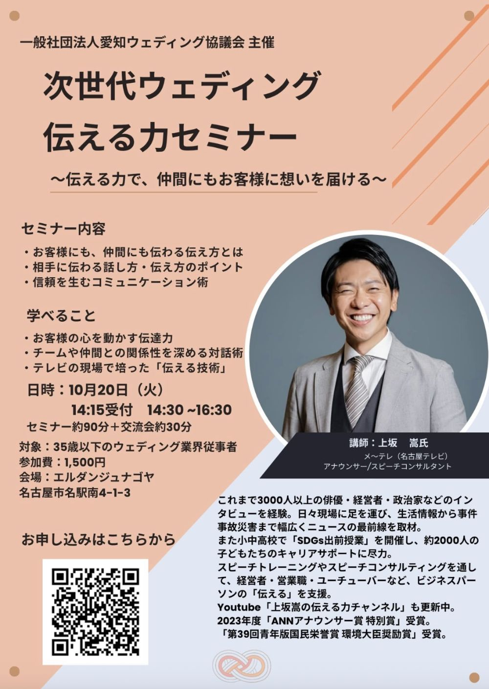

次世代ウェディングを創る皆さまへ。「伝え方」が変わると、お客様との信頼も、チームとの関係も変わります。
愛知ウェディング協議会主催『次世代ウェディング 伝える力セミナー』を開催します。

今回の講師は、元メ〜テレ（名古屋テレビ）アナウンサーであり、スピーチコンサルタントの上坂 嵩氏。これまで3,000人以上へのインタビュー経験や、テレビ現場で培った“伝える技術”をもとに、明日からすぐに実践できるコミュニケーション術を学べます。
私たちの仕事は、「伝えること」の連続です。お客様に提案を届けるのも、想いを言葉にするのも、チームで動くのも、すべては伝え方ひとつで結果が変わります。プロとして人前で話し、人の話を引き出し続けてきた上坂氏の技術は、ウェディングの現場にそのまま活きるはずです。
これまで3000人以上の俳優・経営者・政治家などのインタビューを経験。日々現場に足を運び、生活情報から事件事故災害まで幅広くニュースの最前線を取材。また小中高校で「SDGs出前授業」を開催し、約2000人の子どもたちのキャリアサポートに尽力。スピーチトレーニングやスピーチコンサルティングを通して、経営者・営業職・ユーチューバーなど、ビジネスパーソンの「伝える」を支援。YouTube「上坂嵩の伝える力チャンネル」も更新中。2023年度「ANNアナウンサー賞 特別賞」受賞。「第39回青年版国民栄誉賞 環境大臣奨励賞」受賞。
今回のセミナーは、35歳以下の若手を対象としています。同世代で、同じ業界の未来を担う仲間が集まる場です。「伝える力」を磨くと同時に、横のつながりも生まれる——そんな時間になればと思います。交流会もご用意しておりますので、ぜひ気軽にご参加ください。
ウェディング業界の未来を担う仲間とともに、「伝える力」を磨く時間を過ごしませんか？ 皆さまのご参加を、心よりお待ちしております。